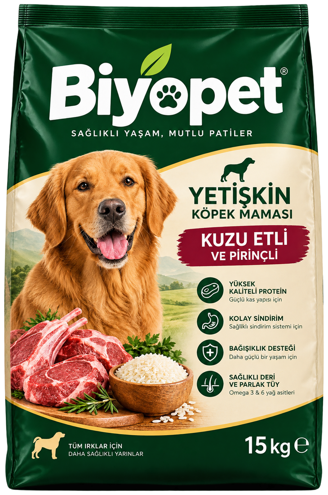

Her yaş döneminin farklı beslenme ihtiyacı vardır. Biyopet ürün ailesi; yetişkin ve
yavru kedi-köpekler için dengelenmiş protein, yağ ve vitamin oranlarıyla hazırlanır.
15 kg ekonomik paket
Tüm ırklar için
Doğal içerikler
Kolay sindirim
Ürün ailesi
Dört ürün, tek standard
4 ürün gösteriliyor
KöpekYetişkin
Yetişkin köpek
Kuzu Etli & Pirinçli
15 kg • Tüm ırklar
Kas sağlığını ve günlük enerji ihtiyacını destekleyen dengeli formül.
İçerik, fayda ve kullanım bilgilerini inceleyin. Tüm ürünler 15 kg'lık ekonomik
paketlerde sunulur.
KöpekYetişkin

Yetişkin köpek · 1–7 yaş
Kuzu Etli & Pirinçli Yetişkin Köpek Maması
15 kg • Tüm ırklar için
Yetişkin köpeklerin günlük enerji ihtiyacını karşılamak ve kas sağlığını desteklemek
için kuzu eti ve pirinç temelli dengeli bir formül. Yüksek kaliteli protein kaynakları
güçlü bir kas yapısına, pirinç ise hassas midelere uygun kolay sindirime katkı sağlar.
Omega 3 ve 6 yağ asitleri sağlıklı deri ve parlak tüyleri destekler.
Büyüme çağındaki yavru köpeklerin artan enerji ve besin ihtiyacına göre hazırlanmış
özel formül. Yüksek kaliteli protein sağlıklı büyümeyi, Omega 3 ve 6 yağ asitleri
beyin gelişimini, kalsiyum-fosfor dengesi ise kemik ve diş gelişimini destekler.
Prebiyotik lifler sindirimi kolaylaştırır.
Yetişkin kedilerin seçici damak zevkine uygun tavuklu formül; yüksek kaliteli protein
ile kas sağlığını destekler. Omega 3 ve 6 yağ asitleri parlak tüyler ve sağlıklı deri
için önemli rol oynar. Prebiyotik lifler sindirimi desteklerken vitamin-mineral
kompleksi günlük bağışıklık ihtiyacına katkı sağlar.
Yavru kedilerin hızlı büyüme döneminde ihtiyaç duyduğu enerji ve besin öğelerini
karşılamak için hazırlanmış tavuklu formül. Yüksek kaliteli protein sağlıklı büyümeyi,
Omega 3 ve 6 beyin gelişimini, kalsiyum-fosfor dengesi kemik ve diş gelişimini
destekler. Prebiyotik lifler sindirime yardımcı olur.
Aşağıdaki değerler başlangıç referansıdır. Miktarı; yaş, kilo, aktivite ve ideal vücut
koşuluna göre ayarlayın. Mama kabının yanında her zaman temiz su bulundurun.
Nasıl kullanılır?
Günlük miktarı iki öğüne bölerek verebilirsiniz. Yavru kedilerde 2–6 ay arası günde
3–4 öğün, 6–12 ay arası 2–3 öğün önerilir. Köpeklerde ise günlük miktarı yaşa ve
aktiviteye göre 1–2 öğüne bölmek yeterlidir.
Mama değişikliğinde 7 günlük geçiş planı uygulayın: yeni mamanın oranını her gün
biraz artırın. Hassas durumlarda veteriner hekiminize danışın.
15 kg'lık paket, orta boy bir köpek için yaklaşık 6–10 hafta, bir kedi için
yaklaşık 6–9 ay yeterli olabilir. Kesin süre günlük tüketime bağlıdır.
Yetişkin köpek · günlük miktar
Vücut ağırlığı
Günlük mama
Öğün
5–10 kg
110–160 g
2 öğün
10–20 kg
160–260 g
2 öğün
20–35 kg
260–380 g
2 öğün
35–50 kg
380–480 g
2 öğün
Yavru köpek (2–12 ay) · günlük miktar
Vücut ağırlığı
Günlük mama
Öğün
2–5 kg
130–220 g
3–4 öğün
5–10 kg
220–330 g
3 öğün
10–20 kg
330–450 g
3 öğün
20 kg üzeri
450–560 g
2–3 öğün
Yetişkin kedi · günlük miktar
Vücut ağırlığı
Günlük mama
Öğün
2–3 kg
35–45 g
2 öğün
3–5 kg
45–65 g
2 öğün
5–7 kg
65–85 g
2 öğün
7 kg üzeri
85–100 g
2 öğün
Yavru kedi (2–12 ay) · günlük miktar
Vücut ağırlığı
Günlük mama
Öğün
1–2 kg
30–45 g
3–4 öğün
2–3 kg
45–60 g
3 öğün
3–4 kg
60–75 g
3 öğün
4 kg üzeri
75–90 g
2–3 öğün
Toptan & bayilik iş birliğiBiyopet ürün ailesini mağazanıza taşıyın.